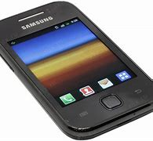
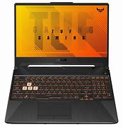
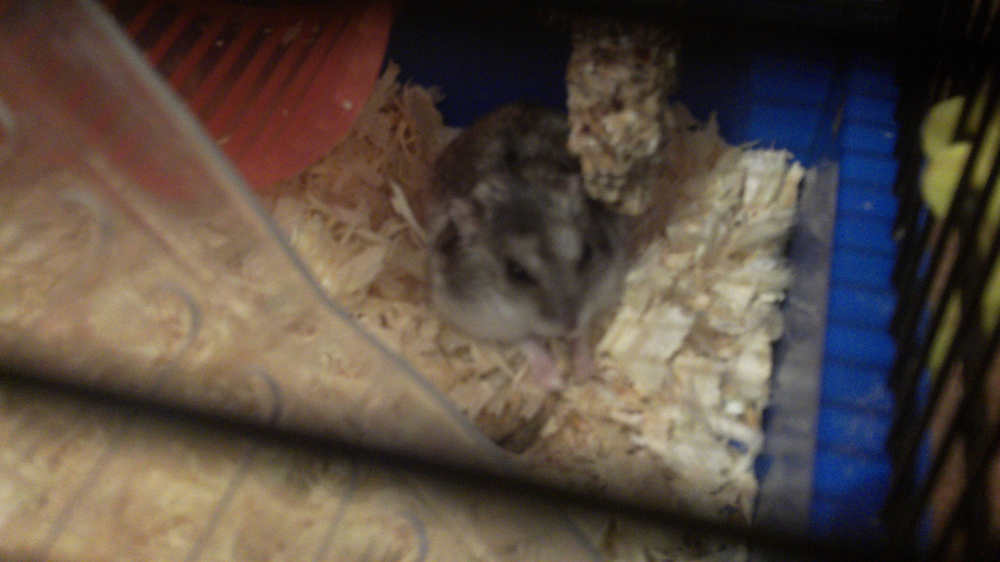

theres some information:
-Im from Poland
-Discord fandom
-Email: konradbubicz@wp.pl or gmail.com
-I have a Samsung galaxy young s5360 with custom firmware

- I also have a hacked PSP-2000 (softmod)
Playstation portable 2000 fandom.com
I will try to post on youtube about psp or this phone
but i don't know how this is going to work out because i don't really have good camera now
-I love old 2000's electronics
I will be really engaged into conversations if you have one of these.
I also really love old alpha or beta Minecraft and Valve games like half life or portal
-I also have a xbox one s.
And Asus F15 laptop with 16gb of ram and gtx 1650

I have some games on it like half life 1 or 2 and portal, i want to try portal 2 but i wait for some SALE's on steam,
i also would like to try garry's mod, which was originally mod for half life 2, i also wanted to install but my internet
is so bad that it fails but half life 2 is working nice on ultra setting with charger plugged in, if you unplug it its around 30fps
Minecraft isnt stable with shaders, it is 120fps and it can drop to 30fps, if you want you can
recommend some fine working games on this laptop
this site is also going to be my personal diary to write some things or i'll put photos here
Thats my dead hamster:

I also did beat half life 2 and i'm currently waiting for the third version :D
It was a great game and story was amazing so i reccomend it to everyone.
currently i'm still trying to find homebrew ports and interesting games for PSP-2000
and maybe the samsung galaxy young s5360 or maybe my Nintendo DSI
If you ever find some interesting homebrew like video players for DSI, just let me know!
I also have a cheap 40$ Chromebook
End of informations
Rest of the website is going to be centered about fandoms of these things
or ports and working games on these systems, down there are links to different places on this website
However i will still write on this page about some things

So as I said, I have a cheap 2015 chromebook, it is dell chromebook 11 3120 model with 4 GB of ram and intel celeron proccesor, half life 1 runs decent,
minecraft is quite playable on normal world but on maps its quite laggy and dont even think about installing mods, portal was running like 15-20 fps,
playstation 1 emulation is really good, psp emulation is working but it varies in fps, its around real performance of non overclocked psp, i tested it in gta so its also demanding game.
However laptop on other side runs Dying light 1 on ultra really good even without a charger, half life 2 as i said before runs unstable on ultra but its probably because of the new 20 year aniversarry of the game.
I don't now how is the old version, cause i don't have installed that one.
Also i didn't say that, but thats my main gaming and work or programming pc.
| My opinion about todays youtube |
 The page is still under construction!
The page is still under construction!